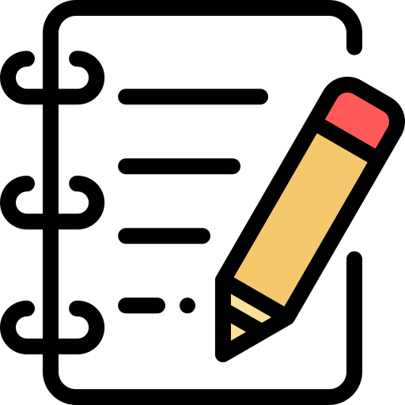

Получи базовые знания об Agile и Scrum

Ты можешь составить себе программу обучения исходя из доступного времени

Все курсы бесплатны для сотрудников ГК Veon

Не забудь оставить отзыв насколько выбранные тобой курсы были полезны. Мы будем постоянно дополнять и улучшать контент.

Handbook
-
Scrum Революционный метод управления проектами. Автор Джефф Сазерленд
275 стр
-
Scrum Guide. Автор Джефф Сазерлен и Кен Швабер
26 стр
-
Agile Manifesto
1 стр
-
Agile Principles
1 стр
-
Глоссарий по agile/scrum
5 стр
Онлайн материалы
-
Предпосылки появления agile. Курс читает Дмитрий Павлов (Dodo Pizza)
2 часа 20 минут
-
Agile Requirements Foundations. Angela Wick.
1 час 43 минуты
- Learn scrum online.
- Agile для новичков
-
Основы Agile: метод Scrum. Курс читает Асхат Уразбаев.
2 часа 10 минут
-
Agile & Scrum – знакомство и легкое погружение. Курс читает Артем Быковец
1 час 37 минут
-
Transitioning from Waterfall to Agile Project Management. Kelley O'Connell.
1 час 32 минут
-
Scrum Basic. Kelley O'Connell
1 час 2 минуты
-
Agile Project Management Principles. Bob McGannon.
1 час 16 минуты
-
Free online Scrum Training Series
1 час 20 минут
-
Introduction to Agile - Transformation, Best Practices and Common Problems. Martin DuPont.
1 час 29 минут
-
30 Minutes Free Agile Scrum Training.
30 минут
-
Мультик - what is Agile? Марк Шед
12 минут
-
Мультик - what is Scrum? Стив Стедман
8 минут
-
Гибкое управление продуктом в двух словах
16 минут
-
Agile Product Ownership in a Nutshell
16 минут
-
Scrum и Kanban: Выжимаем максимум
78 стр
-
Introduction to Scrum
8 минут
-
What is a 'Scrum Master'? - Scrum Guide
4 минуты
-
Олег Бахмутов, Михаил Плотников, Илья Емельянов. Три кита Agile
1 час 5 минут
Презентации и статьи
-
What is Agile?
5 стр
-
Презентация agile/scrum.
22 слайда
-
Презентация. Scrum one pager.
2 слайда
-
Интервью с Николаем Борисовым.
1 стр
-
What is Scrum? Dan Radigan
5 стр
- [AGILE] Подведение итогов Agile Kyrgyzstan Meetup#1
- Can Big Organizations Be Agile? Steve Denning
- Surprise: Microsoft Is Agile. Steve Denning.
- Microsoft's 16 Keys To Being Agile At Scale. Steve Denning